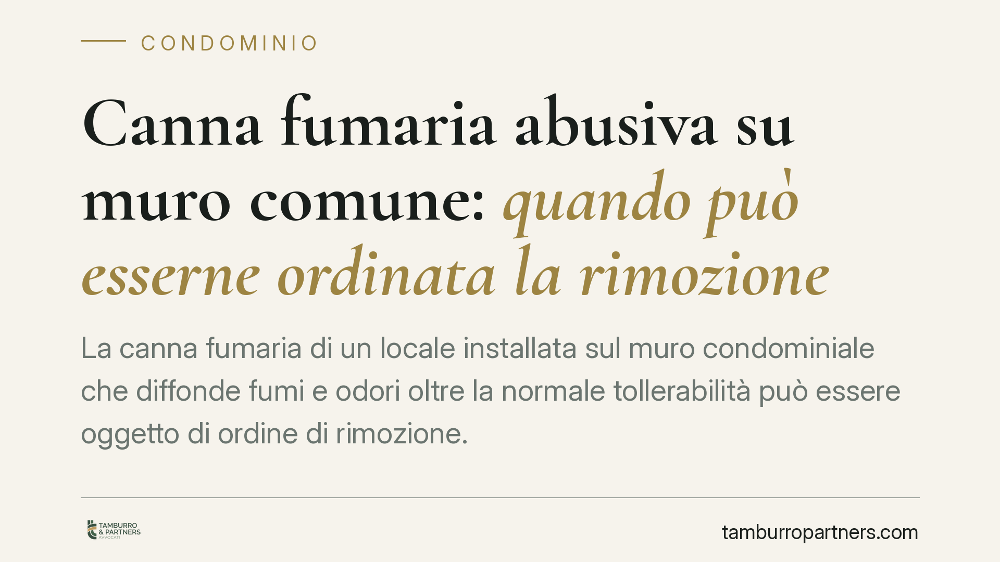

Canna fumaria abusiva su muro comune: quando può esserne ordinata la rimozione
La canna fumaria di un locale installata sul muro condominiale che diffonde fumi e odori oltre la normale tollerabilità può essere oggetto di ordine di rimozione. Un orientamento consolidato della Cassazione valorizza il diritto al pieno godimento della proprietà e la salute dei residenti nel bilanciamento con le esigenze produttive dell'esercente. La valutazione è però sempre tecnica e concreta.

Il caso tipo
Un ristorante installa una canna fumaria sul muro perimetrale comune per convogliare i fumi della cucina. I condomini dei piani superiori lamentano odori persistenti, fumo e rumore che rendono difficile vivere gli appartamenti. Chiedono la rimozione dell'impianto. L'esercente oppone la necessità dell'attività e gli investimenti sostenuti.
È una controversia frequente, perché mette in tensione due interessi entrambi meritevoli: l'iniziativa economica di chi svolge l'attività e il diritto dei residenti a godere in modo pieno della propria abitazione. La giurisprudenza di legittimità offre da tempo criteri per orientare il giudizio, senza però stabilire automatismi.
Inquadramento normativo
Il riferimento centrale è l'art. 844 del codice civile, che disciplina le immissioni. Il primo comma consente al proprietario di impedire fumi, esalazioni, rumori e simili provenienti dal fondo del vicino quando superano la normale tollerabilità, avuto riguardo alla condizione dei luoghi. Il secondo comma impone al giudice di contemperare le esigenze della produzione con le ragioni della proprietà, potendo tener conto anche della priorità di un determinato uso.
Sono due piani distinti che è bene non confondere.
Da un lato, l'azione ex art. 844 c.c. è un'azione a tutela della proprietà e del suo godimento: mira a far cessare o rimuovere l'immissione intollerabile. È l'azione che consente di chiedere l'inibitoria o la rimozione della canna fumaria.
Dall'altro, il diritto alla salute (art. 32 Cost.) entra nel giudizio come parametro di bilanciamento: quando le immissioni incidono sul benessere e sulla salubrità dell'abitazione, il giudice attribuisce maggior peso alla posizione dei residenti nella ponderazione richiesta dal secondo comma dell'art. 844 c.c. La salute, in altri termini, orienta il bilanciamento, ma l'accertamento della tollerabilità resta il presupposto tecnico dell'azione.
Rileva inoltre l'art. 1102 c.c. sull'uso della cosa comune: ciascun condomino può servirsi del muro perimetrale, ma senza alterarne la destinazione né impedire agli altri pari uso. L'installazione realizzata senza titolo idoneo o in violazione del regolamento condominiale può essere già di per sé illegittima, a prescindere dall'entità delle immissioni.
Un dato va precisato con chiarezza: il superamento della normale tollerabilità non è presunto. Va provato in giudizio, di regola tramite consulenza tecnica d'ufficio, valutando intensità, durata, frequenza e caratteristiche dei luoghi. Non esiste una soglia astratta valida ovunque.
Implicazioni pratiche
Per l'esercente: la regolarità amministrativa dell'attività non garantisce l'immunità dalle azioni civili dei vicini. Un impianto autorizzato può comunque produrre immissioni intollerabili ed essere oggetto di ordine di adeguamento o rimozione. Conviene documentare gli accorgimenti tecnici adottati (filtri, altezza dello sbocco, manutenzione).
Per il condomino che subisce le immissioni: il diritto di reagire non richiede la prova di una malattia già insorta, ma richiede la prova del superamento della normale tollerabilità nel caso concreto. La percezione soggettiva del disagio, da sola, non basta.
Per il condominio come ente: l'installazione sul muro comune può essere contestata anche sotto il profilo dell'uso illegittimo della cosa comune ex art. 1102 c.c. L'assemblea e l'amministratore hanno un ruolo nel verificare titoli e conformità dell'opera.
Cosa fare in concreto
- Documentate le immissioni: raccogliete date, orari e descrizioni del fenomeno; se possibile, fatevi assistere da un tecnico per una prima valutazione della tollerabilità.
- Verificate i titoli: controllate autorizzazioni dell'attività, delibere assembleari e regolamento condominiale in merito all'installazione sul muro comune.
- Inviate una diffida scritta all'esercente e, se del caso, all'amministratore, chiedendo l'adeguamento o la rimozione dell'impianto entro un termine ragionevole.
- Attivate la mediazione: in materia condominiale e di diritti reali il tentativo di mediazione è condizione di procedibilità della domanda giudiziale. È opportuno percorrerla prima del giudizio, anche per ridurre tempi e costi.
- Valutate l'azione giudiziale ex art. 844 c.c. solo dopo aver acquisito elementi tecnici solidi: senza prova della tollerabilità superata, l'esito è incerto.
Contributo informativo a cura di Tamburro & Partners Avvocati - Avv. Giuseppe Tamburro. Non costituisce parere legale.
Ogni condominio ha una storia a sé.
Se gestisci un'amministrazione e vuoi un confronto su una specifica questione condominiale, scrivi allo studio. Ti rispondiamo entro un giorno lavorativo.